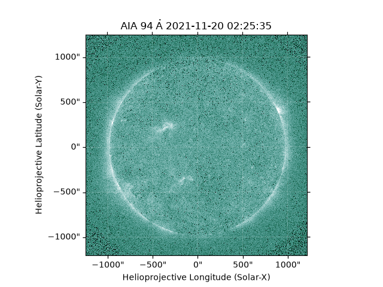
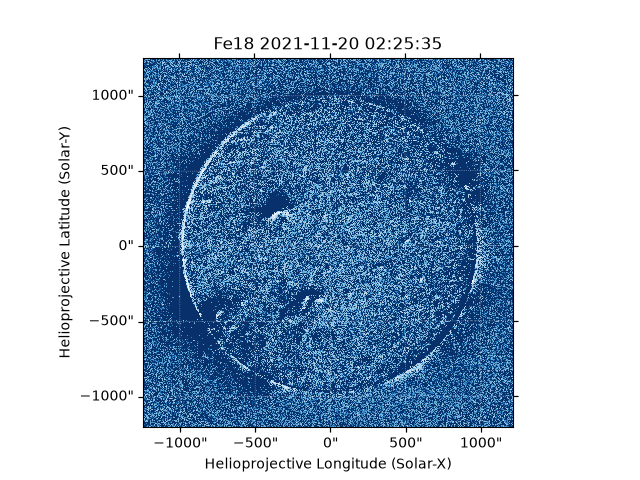

Note
Go to the end to download the full example code.
Downloading SDO Data and Creating Fe18 Proxy
This example shows a function in the package being used to download SDO data.
Following this, the example then goes on to create the Fe18 proxy described in Del Zanna 2013
import ntpath
import os
import urllib.request
import astropy.units as u
import matplotlib.pyplot as plt
import sunpy.map
from sunpy import config
from sunpy.time import parse_time
from jdhsrpy import TEST_DATA_LOCATION
from jdhsrpy.iron_channel import create_iron18
TIME_FORMAT = config.get("general", "time_format")
Download 30 second’s worth of data for the 94 A SDO/AIA channel.
wave_values = [94, 171, 211]
file_directory = os.getcwd()
The following can be used to download 30 seconds worth of data for the three SDO/AIA channels. However, let’s avoid the documentation doing the download and instead rely on the test data.
from jdhsrpy.download import sdo_download
sdo_download(
start_time="2021-11-20T02:25:30",
end_time="2021-11-20T02:26:00",
directory=file_directory,
wave_values=wave_values,
get_hmi=False,
)
The above code will be skipped here. Let’s rely on the back-up to get some files.
aia_files = [
f"{TEST_DATA_LOCATION}/test_sdo_data/aia.lev1.94A_2021_11_20T02_25_35.12Z.image_lev1.fits",
f"{TEST_DATA_LOCATION}/test_sdo_data/aia.lev1.171A_2021_11_20T02_25_45.35Z.image_lev1.fits",
f"{TEST_DATA_LOCATION}/test_sdo_data/aia.lev1.211A_2021_11_20T02_25_45.63Z.image_lev1.fits",
]
for wv, af in zip(wave_values, aia_files):
new_folder = f"{wv}angstrom"
os.makedirs(os.path.join(file_directory, new_folder), exist_ok=True)
filename = os.path.join(file_directory, new_folder, ntpath.split(af)[1])
if not os.path.isfile(filename):
urllib.request.urlretrieve(af, filename)
Can plot one of the files contents using Sunpy
dir_094 = os.path.join(file_directory, "94angstrom")
file_94 = [f for f in os.listdir(dir_094) if f.endswith("fits")]
map_094 = sunpy.map.Map(os.path.join(dir_094, file_94[0]))
plt.figure()
map_094.plot(clip_interval=(1, 99.99) * u.percent)
plt.show()

Create the Fe18 files.
dir_171 = os.path.join(file_directory, "171angstrom")
dir_211 = os.path.join(file_directory, "211angstrom")
dir_fe18 = os.path.join(file_directory, "fe18")
create_iron18(dir_094, dir_171, dir_211, outdir=dir_fe18, needing_prepped=False)
/opt/hostedtoolcache/Python/3.14.8/x64/lib/python3.14/site-packages/astropy/io/fits/hdu/image.py:610: VerifyWarning: Invalid 'BLANK' keyword in header. The 'BLANK' keyword is only applicable to integer data, and will be ignored in this HDU.
warnings.warn(msg, VerifyWarning)
[function: create_iron18] Saved 0 submap(s) of 1.
[]
The needing_prepped input should likely be set to True for a
user as this will prep the AIA file data before creating the Fe18
proxy channel files.
However, to avoid downloading SDO/AIA calibration data during the
documentation build, let’s just set it to False here.
Can plot the result
file_fe18 = [f for f in os.listdir(dir_fe18) if f.endswith("fits")]
map_fe18 = sunpy.map.Map(os.path.join(dir_fe18, file_fe18[0]))
map_fe18.plot_settings.update({"cmap": "Blues_r"})
plt.figure()
map_fe18.plot(clip_interval=(1, 99.99) * u.percent)
plt.title(f"Fe18 {parse_time(map_fe18.date).strftime(TIME_FORMAT)}")
plt.show()

Total running time of the script: (0 minutes 13.160 seconds)